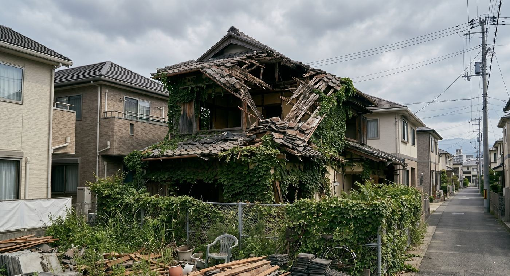

放置された空き家は時間とともに問題が深刻化します
「とりあえず空き家のままにしておこう」と思っている方は多いかもしれません。しかし、空き家の放置は時間が経つほど問題が大きくなります。この記事では鹿児島で空き家を放置した場合の具体的なデメリットと、今すぐできる対処法をまとめました。
デメリット1：建物が急速に劣化する
人が住まなくなった家は、換気されないため湿気が溜まり、カビ・シロアリの被害が急速に進みます。鹿児島は温暖多湿な気候のため、本州の空き家より劣化スピードが速い傾向があります。
「少し様子を見ていたら、気づいたら床が抜けていた」「屋根が崩落していた」という相談はTAMARIEにも寄せられています。放置期間が長くなるほど修繕費用が膨らみ、最終的には活用も売却も難しい状態になります。
デメリット2：固定資産税が6倍になるリスク
空き家が「特定空き家」に指定されると、住宅用地の固定資産税特例が解除され、税負担が最大6倍になります。鹿児島市でも特定空き家への対応が強化されており、近隣からの通報をきっかけに調査が入るケースが増えています。
デメリット3：近隣トラブルに発展する
管理されていない空き家は、以下のような問題で近隣住民とのトラブルに発展します。
- 雑草・樹木の越境（隣家への侵入）
- 害虫・害獣（ネズミ・ゴキブリ）の発生
- 建物の外壁・瓦の落下・飛散
- 不法侵入・ゴミの不法投棄・放火被害
- 景観の悪化による周辺不動産価値の低下
こうしたトラブルが発生した場合、オーナーとして損害賠償責任を問われる可能性もあります。
デメリット4：資産価値がどんどん下がる
建物は建てた瞬間から価値が下がりますが、管理されない空き家は市場価値の下落がさらに加速します。「5年前に相談していれば500万円で売れたのに、今では値がつかない」という事例も実際にあります。売却を検討するなら早いほど有利です。
今すぐできる対処法
対処法1：最低限の管理を続ける
遠方に住んでいる方は、専門業者に管理を委託するのが最も現実的です。月1回程度の巡回・換気・草刈りを依頼するだけで、劣化スピードを大幅に抑えることができます。TAMARIEでは初年度月額100円（キャンペーン中）で管理サービスを提供しています。
対処法2：売却・活用を早めに検討する
「いつか何とかしよう」という先送りが最もリスクを高めます。まずは無料査定を受けて現在の価値を把握することが第一歩です。売却・賃貸・解体など、どの選択肢が最適かは専門家と一緒に考えましょう。
対処法3：相続登記を早めに済ませる
2024年から相続登記が義務化されました。登記が未了の場合、売却や活用の手続きが大幅に複雑になります。まだ手続きしていない方は早急に司法書士などに相談しましょう。